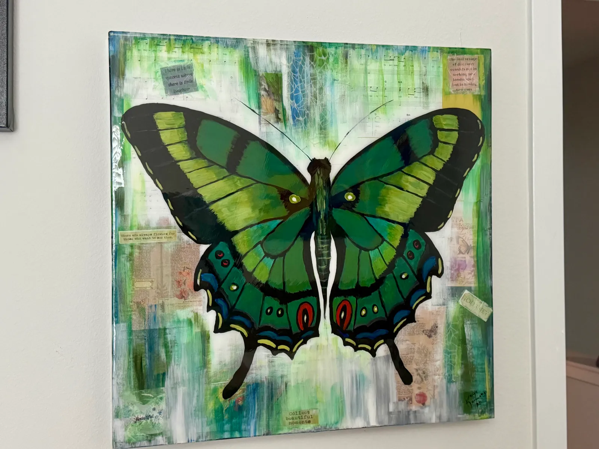
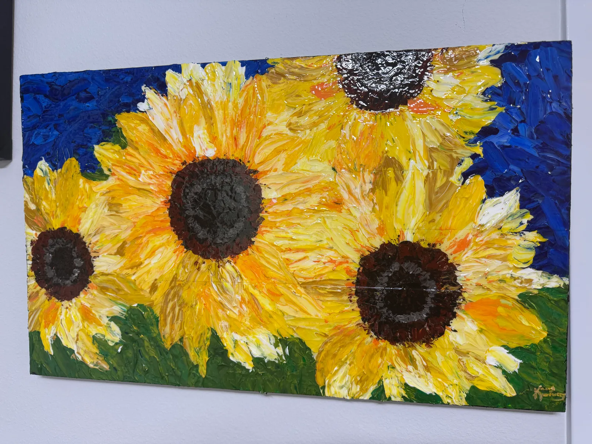
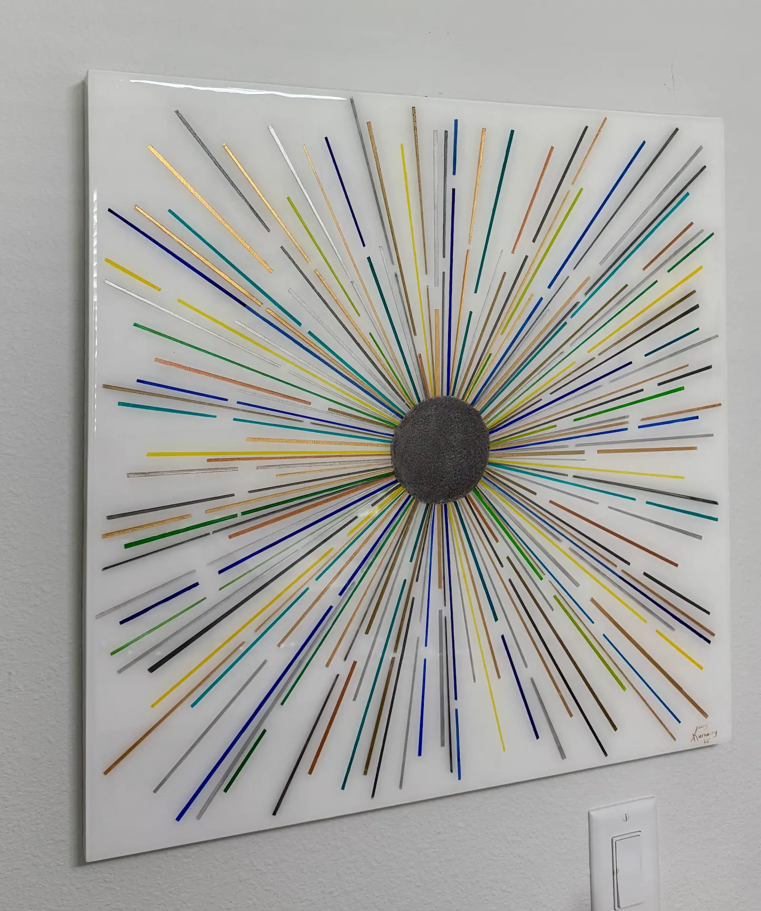
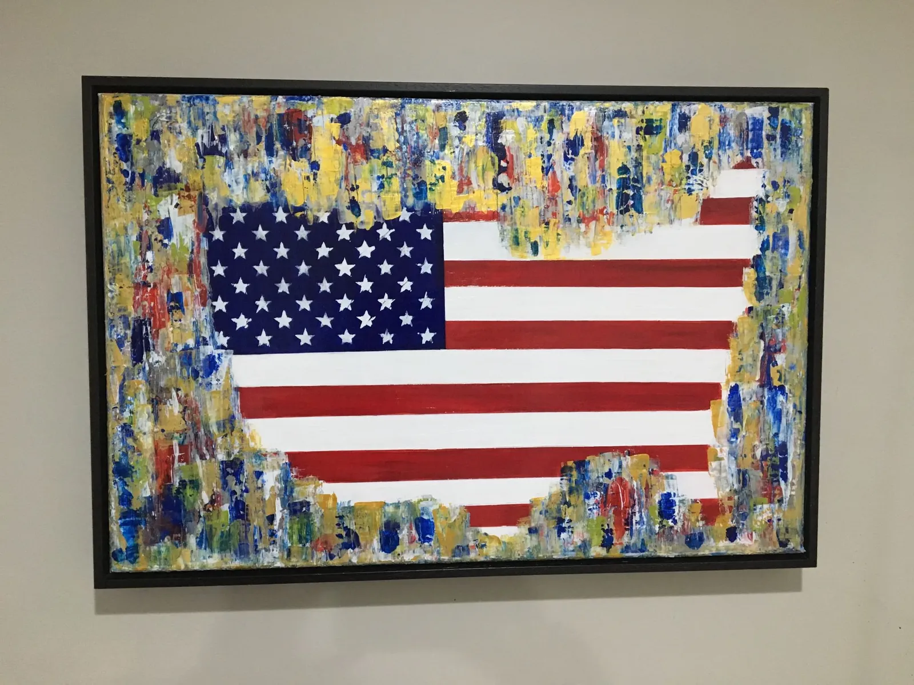
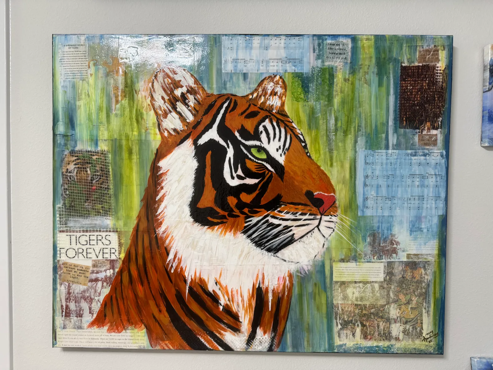

Welcome! Feel free to browse our
gallery
. If you see one you like contact us below!





Click on a painting to see more details!
Also, login to like paintings and see them in your profile!
Login/Sign Up
Logout